After completing this unit, you’ll be able to:
Starting FME Server project
Complete FME Server project
Input files
AutomationsJobOrchestration-Begin.fsproject (built with FME Server 2019.0, b19246)
Finished Automation
AutomationsJobOrchestration-Complete.fsproject (built with FME Server 2019.0, b19246)
AutomationsSplitMergeBlock-Example.fsproject (Only available for FME Server 2021.1, b21600 and above)
In this unit, you’ll create an Automation that will trigger two parallel workflows with different processing times, wait for both to complete, then proceed as one unified process. This type of workflow may be of particular interest when, for example, updating several feature types in a database. Instead of one large job submitted to one FME engine, enjoy the performance gains of splitting your workflow into separate jobs to be processed by many engines in parallel! Separating workflows into several smaller jobs, rather than one large one, can also increase fault tolerance (if one job fails, other parts of the operation can continue).
With Automations, many workspaces may be chained together to run in series (and/or parallel) after a triggering event. Merge Actions are available that will cause an Automation to wait until all jobs upstream of the Merge point have completed, as long as they were triggered by the same event. New to FME Server 2021.1, Split-Merge Blocks make an Automation wait until all jobs contained within a block are complete. When complete, a single, unified message (per input) is returned from the Split-Merge Block. We’ll take a look at how this works later. Provided more than one engine is available to FME Server, multiple jobs can be processed at once, increasing the speed of the Automation. These components are particularly useful when an output requires many data processing steps, but not all of the jobs need to run in series.
In this unit, there are five workspaces; we will coordinate their running to produce a (fictional) final data product. The sample workspaces contain Decelerator transformers in order to demonstrate how an Automation would handle different job timing in a production workflow.
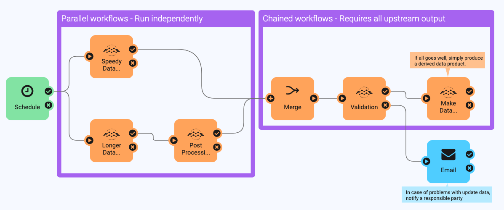
From the Resources section above, download the linked FME Server project AutomationsJobOrchestration-Begin.fsproject
Open FME Server (2021.1 or later) and import it by clicking Projects > Projects, then Import.
From the FME Server web interface, go to Automations > Build Automation to create a new Automation.
On the Automations canvas, double-click the Trigger node. In this exercise, configure a Schedule Initiated Trigger on a daily interval. Once the Automation is running, we’ll be able to test it manually whenever we want. Alternatively, you can add a Manual Trigger to the canvas.
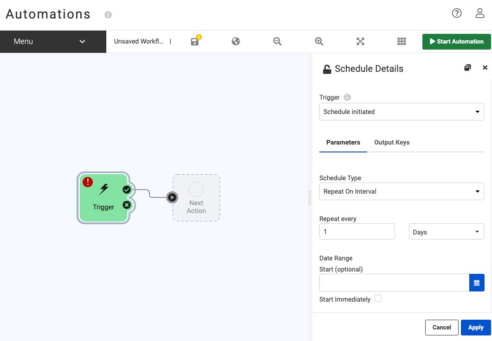
Configure the next Action as a Run Workspace. Look in the repository created when importing the server project (Automations Exercises), and add SpeedyDataUpdate.fmw. There are no published parameters to configure for this workspace.
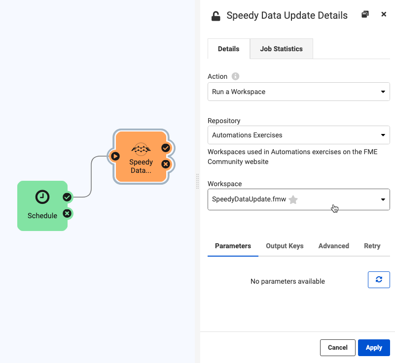
If the node tray is not already expanded, click the symbol and drag another Action onto the canvas downstream of the Trigger. Click the output port of the Trigger and drag a connection to the input port of the new Action. Configure this new Action as a Run Workspace. This time, add LongerDataUpdate.fmw. There are no published parameters to configure for this workspace.
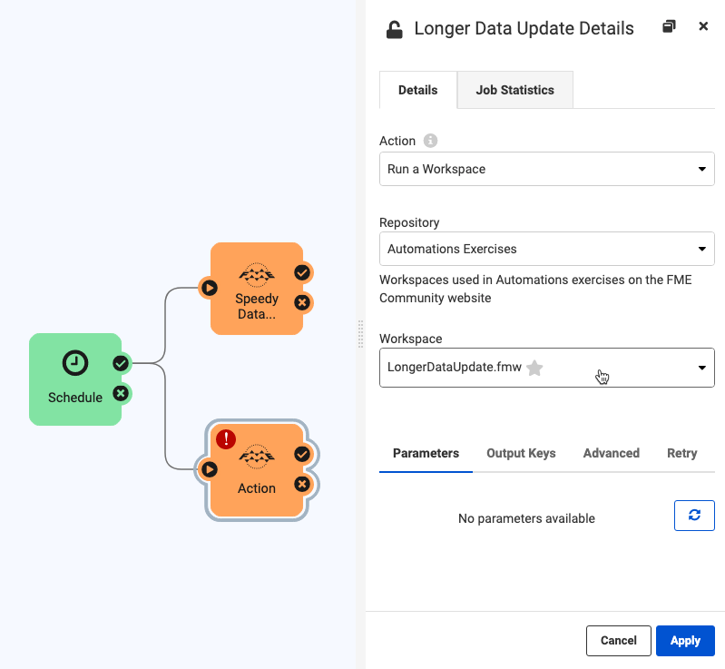
Drag out a third Action node and configure it as a Run Workspace downstream of the success port of LongerDataUpdate.fmw. Run PostProcessing_LDU.fmw here.
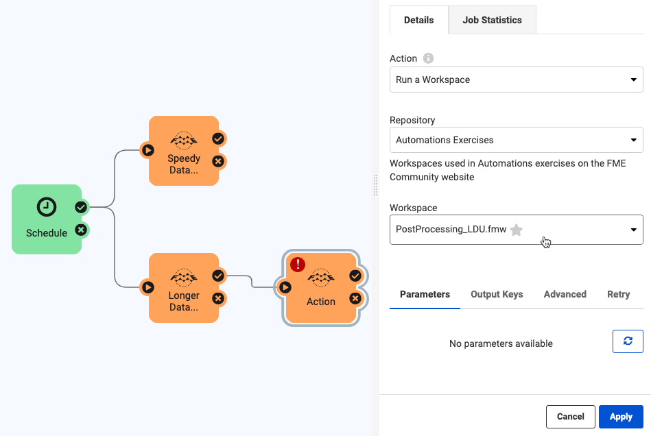
Downstream of all three Run Workspace Actions, place a Merge Action. Connect it to the success ports of both branches of your Automation.
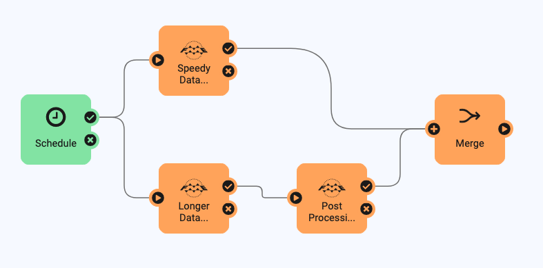
An alternate workflow incorporates the new Split-Merge Block  . The Split-Merge Block is designed for running collections of workspaces and waiting for all jobs to complete before carrying on with downstream actions.
. The Split-Merge Block is designed for running collections of workspaces and waiting for all jobs to complete before carrying on with downstream actions.
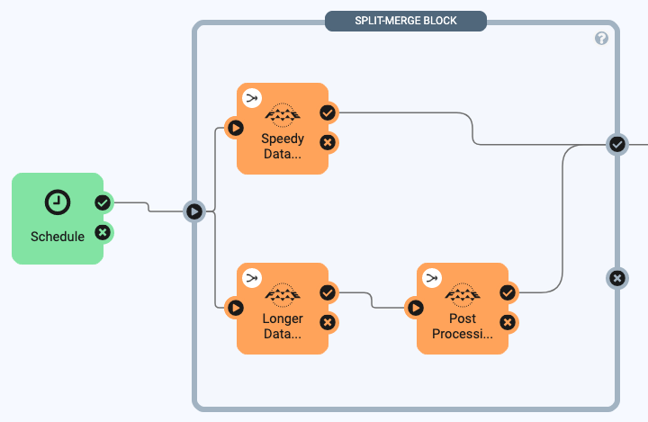
What’s the difference between the Merge Action and Split-Merge Block? The main advantages of the Split-Merge Block are that it can merge Automation Writer outputs and wait for all triggered jobs within the block to finish before continuing with downstream actions. Right now, Split-Merge Blocks are limited to just workspace actions. In contrast, the Merge Action cannot be connected to multiple triggers or workflows that use Automation Writer messages.
When should you use the Split-Merge Block? Consider the following scenario...
You would like to process statistics for each city block, in each county, of a state. You only want to process one summary report per county, but there are 60 counties containing 15 blocks, each representing a single feature. If a workspace runs for every feature, this will result in more reports being created than required. Specifically, the county-processing workspace (ProcessCounty.fmw) will run 60 times and the block-processing workspace (ProcessBlock.fmw) will run 900 times!
With a Split-Merge Block, all 900 block-level jobs will run before outputting a merged message for each county. This reduces the output messages to 60 (one for each county), and downstream workspaces can process the reports according to this message data. This workflow is impossible with the Merge Action because it uses Automation Writers.
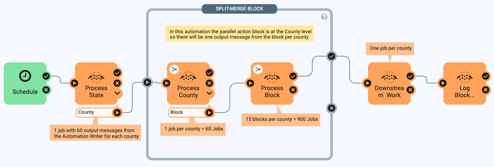
Nested blocks are also supported for further message merging. If we reimagine the previous example to receive an email notification when the Automation completes, we can add another Split-Merge Block that surrounds all the workspaces. The output from the block would be 1 message since the Trigger initiates the workflow with 1 message, and this single message can be used to send an email.
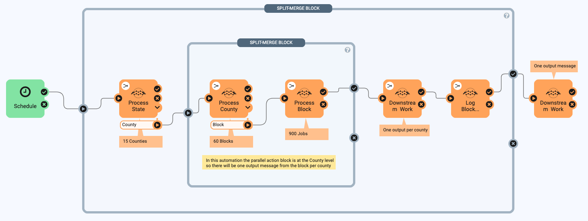
The Split-Merge Block opens new doors for handling Automation Writer outputs, allows control over the granularity of message merging for downstream processes, and can drastically improve the efficiency of your workflows when combined with Queue Control. To see this scenario in action, download and import the FME Server project named AutomationsSplitMergeBlock-Example.fsproject.
Downstream of the Merge, configure a Run Workspace Action to run Validation.fmw. Now that all the planned updates to the database are prepared, it is time for a validation routine before the changes are reconciled and posted. Downstream of the success port of the Action that runs the data validation workspace, configure a Run Workspace to run MakeDataProduct.fmw. Imagine that you’re now set up to generate a nightly report that will be ready in the morning with the previous day’s work incorporated!
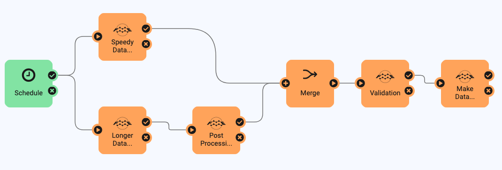
Downstream of the failure port of the Validation.fmw Action, configure a Send an Email External Action (or another external notification of your choice) to alert you if the night’s data upload has failed validation.

As in the article Run a Workspace in Response to Incoming Email, use Load Template or manually enter your email server information. If you are using an SMTP server that requires authentication (likely with popular email providers), you’ll need to enter values in the SMTP Account (optional) and Password (optional) fields. Input an Email To address you can check, and add an Email From (the same as your account email address) address.
In the Email Attachment field, use the down arrow to select Workspace > Job Log.
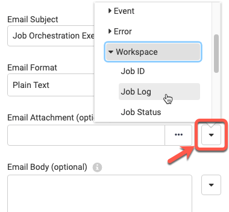
In the Email Body field, select General > Event as JSON, or choose Text Editor to compose a friendly message that you can automatically populate with details using JSON keys from the Automation.

Dear Responsible Party,
On
{job.timeFinished}, nightly validation routine{rob.repository}/{job.workspace}terminated with status "{job.status}" and message "{job.statusMessage}". The job log is available on FME Server under job ID{job.id}, and also attached to this email.Production of nightly data product has been halted until input can be validated.
Cheers,
A Concerned Publisher
To get an email with the job log of any other failed jobs, connect the failure ports of those jobs to the email Action as well (or add another Email Action). Since the workspaces included in this exercise will not fail jobs, test that emails will be sent by also connecting the Email Action to the success port of your validation Action.
To preserve your progress, click Menu above the Automations canvas, then Save As. Choose a name and add some descriptive tags (optional), then click OK. Finally, click Start Automation in the upper right.
If you configured the trigger as a schedule and left Start Immediately checked when configuring it, your Automation should complete its first run in short order. Wait a minute for the Jobs to finish, then check Menu > View Triggered Jobs. You should see the five workspaces from your Automation listed, with the Automation’s name as Source Name and Source Type Automations. To see the job log from any of the workspace jobs submitted by the Automation, you can click on its name here.
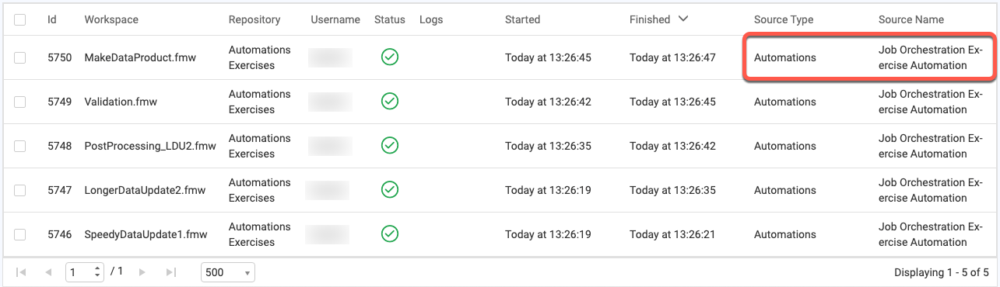
If you don’t see a set of jobs from this Automation yet, manually trigger it. To do this, display the running Automation on the canvas (click its name in the Automations > Manage list), then click into the Schedule node and click Trigger. If using a Manual Trigger, click the Trigger button next to Start Automation.
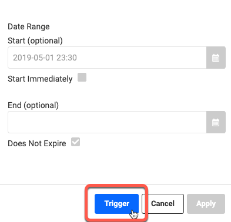
The job logs will tell you what happened while a particular workspace was run, but for the big picture of what the Automation did when, return to Automations > Manage, tick the checkbox for your parallel workflows Automation, and select View Log File from the Actions menu.
For future troubleshooting, you can search or filter the Automation log with the tools above the log entries. For now, click the clock button to show timestamps for each log entry. After the single-Action branch finishes its job, you should see a log entry, “(Automations) Received 1 of 2 notifications for merge action.” From the timestamps, you’ll see that the second chained job is not sent to an Engine to be processed until after the upstream job is complete and that once the third job completes, there is another entry, “(Automations) Received 2 of 2 notifications for merge action.”, after which any Actions after the Merge are processed.
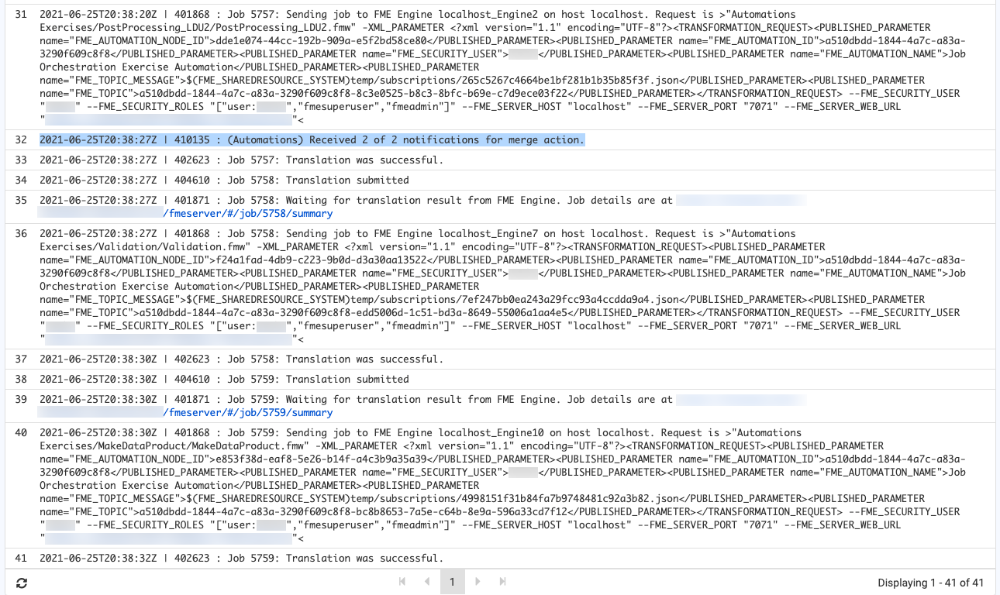
Well done! Your Automation will now orchestrate two parallel workflows that merge into one after all parallel jobs are complete.